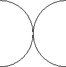
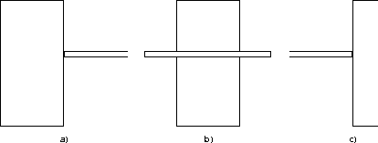

Several promising methods have been developed for grouping edge elements into high level viewpoint-invariant or pseudo-invariant features such as curves or closed contours [61, 21, 29, 7, 26], and yet performing this task in a robust, stable and environment-independent manner appears to be a problem that is not yet fully resolved. Furthermore, the issues of scene dynamics and active observers further complicate the interpretation of grouped structures.
A canonical example of how feature extraction can be unstable for even the simplest of scenes is demonstrated in Figure 3.1, wherein two objects appear. The difficulty for the feature extractor is whether to interpret the scene as two spheres abutting on the left and right, two cusps abutting on the top and bottom, or even two wires crossing one another. Without other high-level semantic cues from the environment, it is impossible for even a human to resolve this ambiguity. This figure-ground issue has been the subject of a wide variety of phenomenological studies in biological and computational vision systems [34].

Figure 3.1: Figure-ground ambiguity in the interpretation of two objects.
As a second example, consider the more complicated case of two common structures and their interaction from a moving observer's perspective. Figure 3.2 shows the sequence of a table passing in front of a door frame due to a translation on the part of the observer (for the sake of simplicity, the legs are not drawn). Clearly, any imaginable choice of local feature content (junctions, lines, closed curves, et cetera) will result in instabilities near the intersection of the table and door as the table first occludes the left edge of the door frame, then bisects the door, and finally clears the right edge of the door frame.

Figure 3.2: A table passing in front of a door.
Given the apparent difficulties encountered by edge interpretation techniques, it might be surprising to suggest that the distribution of edge elements in a scene is also closely related to basic scene structure, and yet can offer greater stability for tracking. This idea is motivated by the fact that characterising the distribution of edges is decoupled from their interpretation. Furthermore, the edge element distribution shares similar advantages with the underlying edge map, such as robustness to variations in illumination. Finally, one can expect that a local description of the edge distribution will vary smoothly with changes in camera pose.